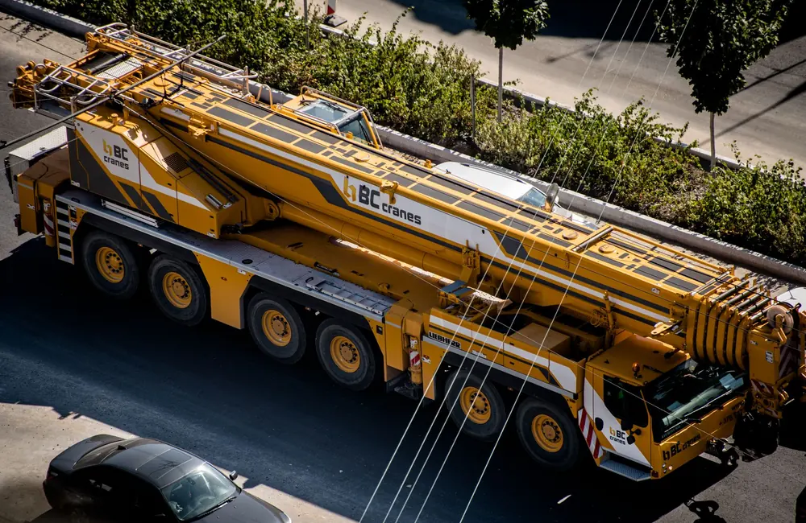
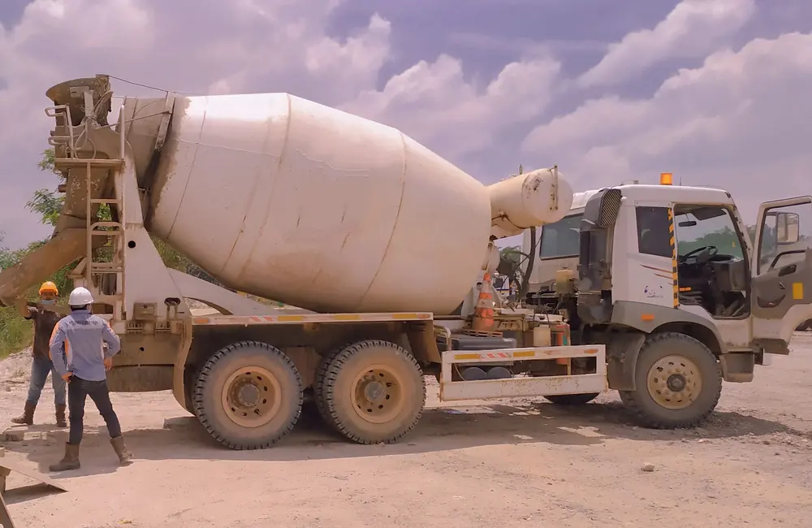
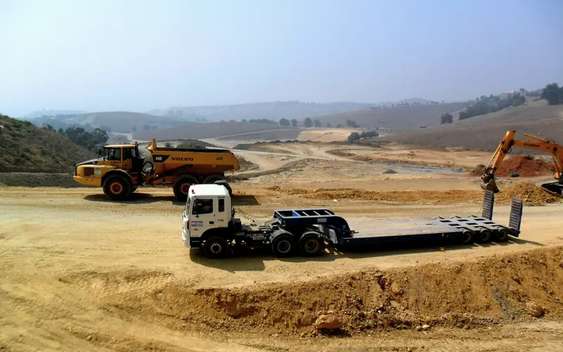
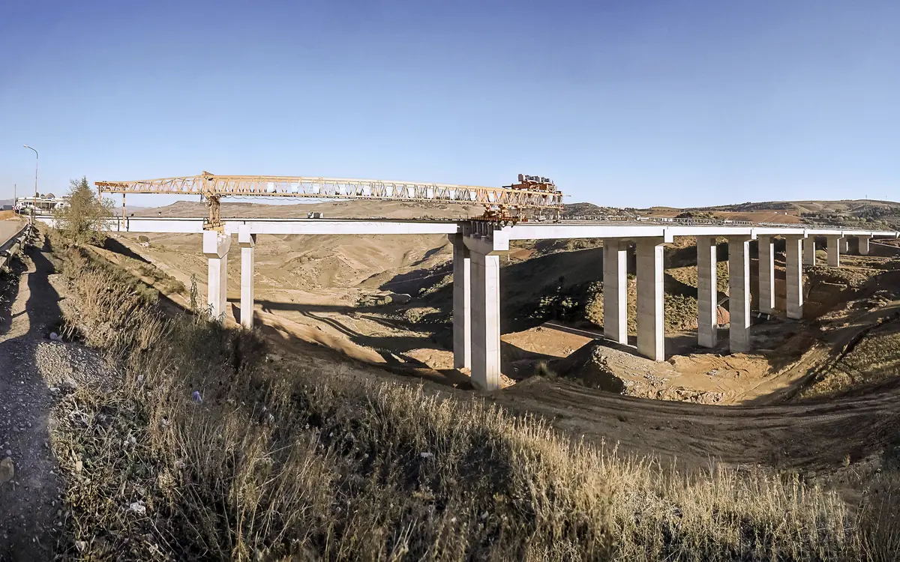
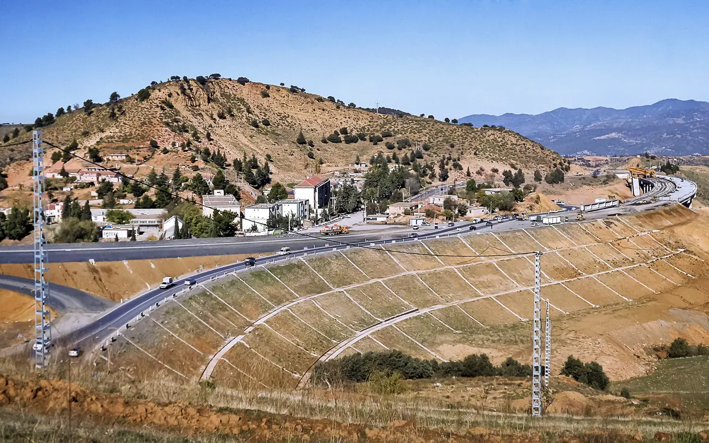

الرفع
رافعات لكل التضاريس وشاحنات رافعة من 50 إلى 280 طن، تصلك مع مشغّلها. الحمولات الكبرى تُحجز قبل أيام.
- رفع الروافد والهياكل المعدنية
- التركيب والمناولة في الورشة
تؤجّر مؤسسة ETPBH MAROUANE الرافعات وآليات الأشغال العمومية للمقاولات. كل آلية تخرج مع سائقها أو مشغّلها. مقرنا بالجزائر العاصمة ونعمل في كامل التراب الوطني.
طلبية واحدة وفاتورة واحدة، سواء كان العتاد من حظيرتنا أو من أحد شركائنا المتعاقدين.

رافعات لكل التضاريس وشاحنات رافعة من 50 إلى 280 طن، تصلك مع مشغّلها. الحمولات الكبرى تُحجز قبل أيام.

حفارات هيدروليكية على جنزير حتى فئة 50 طن، وحفارات على عجلات، وآليات مناولة، وآلات تسوية ومداحل.

شاحنات خلاطة وشاحنة مضخة خرسانة MAN لتموين الورشات بالخرسانة وصبّها.

شاحنات قلابة 6x4 ونصف مقطورات قلابة أو مسطحة أو صهريج. ولنقل آلية ثقيلة نوفّر ناقلات آليات 40 طن.

مؤسسة مؤهَّلة من الصنف الرابع في الأشغال العمومية، مع نشاطين ثانويين في البناء والري.

يمكن كراء كل آلية مع سائقها أو مشغّلها، الحاصلين على شهادات الكفاءة المهنية.
آلياتنا وآليات الملاك الذين تربطنا بهم اتفاقيات تشكّل حظيرة واحدة. ترسل طلبيتك، ونتكفّل بالباقي حتى الفاتورة.
الرفع الثقيل
من شاحنات رافعة 50 طن إلى رافعات 280 طن، لرفع روافد المنشآت الفنية والبلاطات الجاهزة والتجهيزات الصناعية.
التعبئة
هذا أجلنا المعتاد بين وصل الطلب ووصول الآلية إلى الورشة، أينما كانت. الرافعات الثقيلة تُبرمج مسبقًا.
محاور واحد
المشغّل وورقة التشغيل اليومية على عاتقنا، ومعهما التأمين والفاتورة، حتى لو جاءت الآلية من أحد شركائنا.
نوع الآلية، مكان الورشة، المدة: مكالمة أو رسالة واتساب تكفي.
نؤكّد توفّر العتاد ونرسل لك عرض سعر خارج الرسوم مع الشروط.
تُنقل الآلية إلى الورشة مع سائقها أو مشغّلها خلال 48 إلى 72 ساعة.
تنقيط يومي يوقّعه ممثّلك، ثم فاتورة واحدة.
تعمل آلياتنا لحساب المؤسسات التي تنجز البنى التحتية الكبرى للبلاد، من المجمّعات الصينية إلى المؤسسات الوطنية.
يمتد هذا الخط على 422 كلم بين عنابة وتبسة، ويخدم مشروع الفوسفات المدمج. في مقطع بوشقوف – سوق أهراس – الدريعة نوفّر لشركة CRBC، فرع مجمّع CCCC، شاحنات رافعة وخلاطات خرسانة، وننقل لها آلياتها الثقيلة بناقلات 40 طن.
في 2026 رفعت رافعات بحمولة 200 و280 طن البلاطات الجاهزة لمنشآت المقطع نفسه، بولاية سوق أهراس.
في 2026 عبّأنا رافعة Liebherr بحمولة 200 طن في تندوف. نرافق زبائننا حيث تفتح الدولة ورشاتها الجديدة.
تستثمر الجزائر بقوة في السكك الحديدية والمناجم، وكذلك في المياه والطرق. خط السكة المنجمي الشرقي سينقل فوسفات تبسة إلى ميناء عنابة. وخط بشار – تندوف – غار جبيلات، الذي دخل الخدمة في فيفري 2026، يفتح الجنوب على خام الحديد.
كل هذه الورشات تحتاج إلى رفع ثقيل ونقل، وغالبًا بعيدًا عن المدن الكبرى. هناك نريد أن نكون مفيدين: آلية موثوقة تصل بسرعة، مع مشغّل جزائري يتقن عمله.
جسور، حفر وتسوية، نقل آليات. في مثل هذه الورشات تعمل رافعاتنا وناقلاتنا.




صور توضيحية لورشات في الجزائر نشرها habib kaki على Wikimedia Commons (ملكية عامة ورخصة CC BY 3.0)، ولا تمثّل عتاد ETPBH MAROUANE. الفيديو وصور الآليات: Pexels.
نقدّم عند الطلب ملف التسجيل الكامل: السجل التجاري، رقم التعريف الجبائي، رقم التعريف الإحصائي، شهادات CNAS وCASNOS، مستخرج جدول الضرائب، القانون الأساسي، قائمة العتاد مع البطاقات الرمادية وشهادات حسن التنفيذ.
شارع الفتح ابن خلفان رقم 45، الحصة رقم 32، الطابق الأرضي 04، حيدرة، 16035 الجزائر
عرض على الخريطةالطريق الوطني رقم 01، مجموعة الملكية رقم 114، القسم 03، السحاولة، الجزائر
عرض على الخريطةقل لنا ما العتاد الذي تحتاجه، وأين، ولأي مدة. نرسل لك عرضًا.
المحاوِر: السيد لعطلي المداني، المسيّر